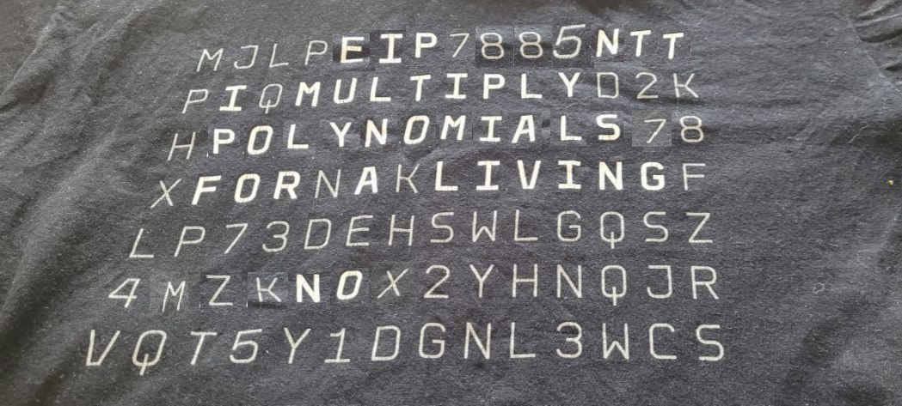

EIP-7885: the Case for NTT as an Ethereum Precompile for PQ Cryptography
Introduction

My favorite T-shirt updated
As the era of post-quantum (PQ) cryptography approaches, ensuring
that blockchain systems like Ethereum can efficiently verify PQ
signatures is crucial. One of the core operations for many PQ schemes is
the Number Theoretic Transform (NTT), which plays a
fundamental role in accelerating cryptographic computations. In any
cryptographic library, fast multiplier is the atomic
critical operation. This is the lowest level function, typically
optimized using assembly or crypto-accelerator. While traditional
crypt-accelerators leverage fast multiplication over large fields (256
to 512 bits), using Montgomery multiplier as their core operator,
lattices operate on polynomial over smaller fields, requiring an
hardware architecture update.
At ZKNOX, we have been exploring ways to make PQ
signature verification on Ethereum more gas-efficient. Our latest
work focuses on implementing NTT in Yul, benchmarking
its performance, and proposing a long-term solution to Ethereum's PQ
challenges.
Optimizing
NTT in Yul for Gas-Efficient PQ Verification
NTT is an essential component in many lattice-based PQ signature
schemes, including FALCON and
DILITHIUM, two leading candidates from the NIST PQC
competition. To enable efficient verification of these schemes on
Ethereum, we implemented NTT in Yul, Ethereum's
low-level intermediate language, which offers finer control over gas
optimizations.
Our benchmarks showed significant improvements: - A full
FALCON signature verification now consumes just
3.6M gas—a substantial reduction compared to previous
implementations. - Similar performance gains were observed for DILITHIUM
and other PQ schemes relying on NTT.
While this optimization enables rapid experimentation and improves
efficiency, the cost is still too high for Ethereum PQ
scaling in the long term.
The Need for NTT as
an Ethereum Precompile
Despite the gas savings from our Yul implementation, the cost of
verifying PQ signatures remains a major bottleneck for practical
adoption. This is why we advocate for including NTT as an
Ethereum precompile. This proposition is now submitted in
predraft mode as EIP-7885.
Why a Precompile?
A precompile is a smart contract-like function implemented at the
protocol level, offering much lower gas costs than
executing the same logic in Solidity or Yul. Adding NTT as a precompile
would: - Drastically reduce gas costs for PQ signature
verification. - Enable Ethereum to support multiple PQ
candidates instead of being limited to a single scheme. -
Enhance Ethereum's crypto-agility, ensuring smooth
transitions as new PQ standards evolve.
Towards a Crypto-Agile
Ethereum
Rather than committing Ethereum to a single PQ scheme, integrating an
NTT precompile lays the foundation for broader PQ adoption. This
approach ensures Ethereum remains flexible and secure as cryptographic
advancements continue.
By making NTT efficient and widely accessible, we move closer to a
scalable, quantum-resistant Ethereum—one that is
prepared for the post-quantum future without sacrificing usability.
Reduce Starks settlement
Starks is a ZK technology used to scale ETHEREUM by ZKEVM layer 2
like Starknet, Succint. NTT is also required during Starks settlement.
This post
describes its role in the conception of a fast stark verifier. In
addition to PQ cryptography, EIP-7885 also reduces cost for
settlement.
Conclusion
Post-quantum security is not just a distant concern—it's an imminent
challenge that must be addressed today. Our work optimizing NTT in Yul
demonstrates the potential for gas-efficient PQ verification, but a
long-term solution requires Ethereum protocol
changes.
We believe an NTT precompile is the next logical
step towards PQ crypto-agility and ZK
transition. We invite the Ethereum community, researchers, and
developers to join the discussion
and push forward this crucial upgrade.
🚀 Let's future-proof Ethereum together!
References
ethereum
research: NTT as PostQuantum and Starks settlements helper
precompile.
EIP-7885: the Case for NTT as an Ethereum Precompile for PQ Cryptography
2025 Feb 24 See all postsIntroduction
As the era of post-quantum (PQ) cryptography approaches, ensuring that blockchain systems like Ethereum can efficiently verify PQ signatures is crucial. One of the core operations for many PQ schemes is the Number Theoretic Transform (NTT), which plays a fundamental role in accelerating cryptographic computations. In any cryptographic library, fast multiplier is the atomic critical operation. This is the lowest level function, typically optimized using assembly or crypto-accelerator. While traditional crypt-accelerators leverage fast multiplication over large fields (256 to 512 bits), using Montgomery multiplier as their core operator, lattices operate on polynomial over smaller fields, requiring an hardware architecture update.
At ZKNOX, we have been exploring ways to make PQ signature verification on Ethereum more gas-efficient. Our latest work focuses on implementing NTT in Yul, benchmarking its performance, and proposing a long-term solution to Ethereum's PQ challenges.
Optimizing NTT in Yul for Gas-Efficient PQ Verification
NTT is an essential component in many lattice-based PQ signature schemes, including FALCON and DILITHIUM, two leading candidates from the NIST PQC competition. To enable efficient verification of these schemes on Ethereum, we implemented NTT in Yul, Ethereum's low-level intermediate language, which offers finer control over gas optimizations.
Our benchmarks showed significant improvements: - A full FALCON signature verification now consumes just 3.6M gas—a substantial reduction compared to previous implementations. - Similar performance gains were observed for DILITHIUM and other PQ schemes relying on NTT.
While this optimization enables rapid experimentation and improves efficiency, the cost is still too high for Ethereum PQ scaling in the long term.
The Need for NTT as an Ethereum Precompile
Despite the gas savings from our Yul implementation, the cost of verifying PQ signatures remains a major bottleneck for practical adoption. This is why we advocate for including NTT as an Ethereum precompile. This proposition is now submitted in predraft mode as EIP-7885.
Why a Precompile?
A precompile is a smart contract-like function implemented at the protocol level, offering much lower gas costs than executing the same logic in Solidity or Yul. Adding NTT as a precompile would: - Drastically reduce gas costs for PQ signature verification. - Enable Ethereum to support multiple PQ candidates instead of being limited to a single scheme. - Enhance Ethereum's crypto-agility, ensuring smooth transitions as new PQ standards evolve.
Towards a Crypto-Agile Ethereum
Rather than committing Ethereum to a single PQ scheme, integrating an NTT precompile lays the foundation for broader PQ adoption. This approach ensures Ethereum remains flexible and secure as cryptographic advancements continue.
By making NTT efficient and widely accessible, we move closer to a scalable, quantum-resistant Ethereum—one that is prepared for the post-quantum future without sacrificing usability.
Reduce Starks settlement
Starks is a ZK technology used to scale ETHEREUM by ZKEVM layer 2 like Starknet, Succint. NTT is also required during Starks settlement. This post describes its role in the conception of a fast stark verifier. In addition to PQ cryptography, EIP-7885 also reduces cost for settlement.
Conclusion
Post-quantum security is not just a distant concern—it's an imminent challenge that must be addressed today. Our work optimizing NTT in Yul demonstrates the potential for gas-efficient PQ verification, but a long-term solution requires Ethereum protocol changes.
We believe an NTT precompile is the next logical step towards PQ crypto-agility and ZK transition. We invite the Ethereum community, researchers, and developers to join the discussion and push forward this crucial upgrade.
🚀 Let's future-proof Ethereum together!
References
ethereum research: NTT as PostQuantum and Starks settlements helper precompile.
ethereum research: Tasklist for Post quantum ethereum.
vitalik's post about FFT
ZKNOX NTT (github) implementation.
ZKNOX FALCON (github) implementation leveraging EIP-7885.
Reach us
🔐 Practical security on the whole chain.
Github | Website | Twitter | Blog | Contact Info